■ 買取価格情報 ■
・掲載されている価格は、当社に持ち込んで頂いた場合の買取価格(税込)です。
・買取価格は常に変動していますのでご注意ください。
・買取価格がページに反映されるのに時間がかかることがあります。そのため、実際の買取価格と異なる場合がございますので、予めご了承ください。
そのほかホームページ内でご紹介しているもの以外にも様々な金属くずの高価買取が可能です。
お気軽にお問い合わせください。
・雑線・アルミガラ・ハーネス（自動車線）・皮付き空調銅配管・鉛・トランスエア・パソコン本体・ノートパソコン
・安定器・アルミラジエター・タイヤ付きホイール・草刈り機・バイク・自転車・トラクター など
 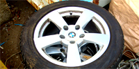
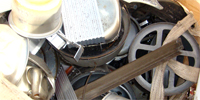
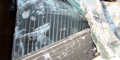
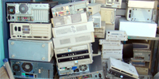
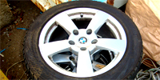
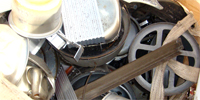
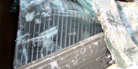
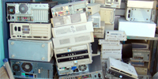
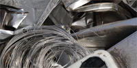

 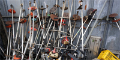
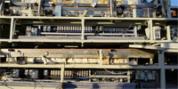
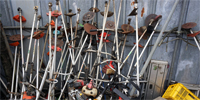
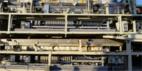